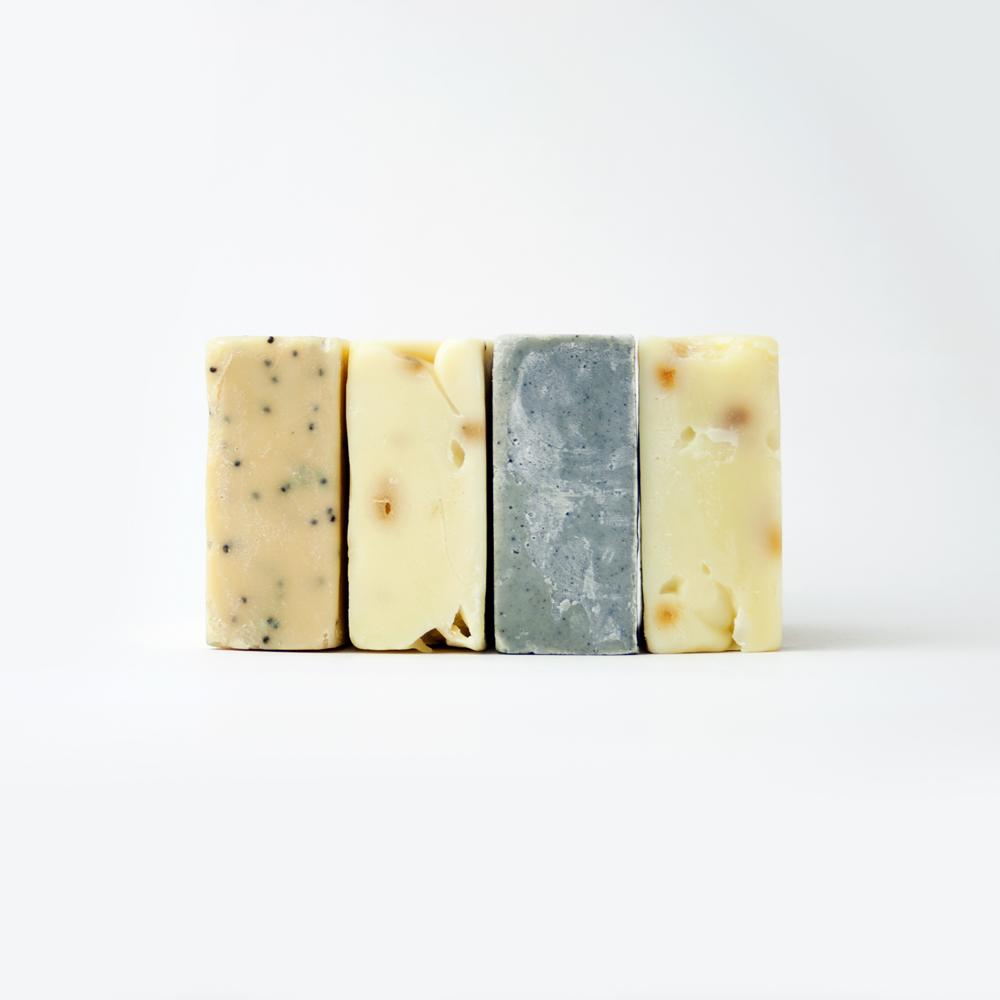
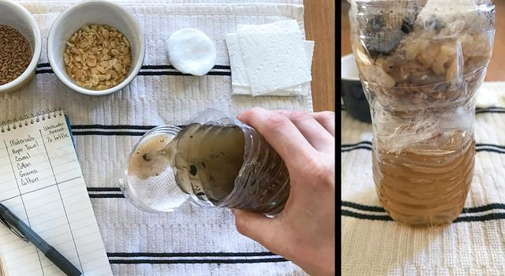
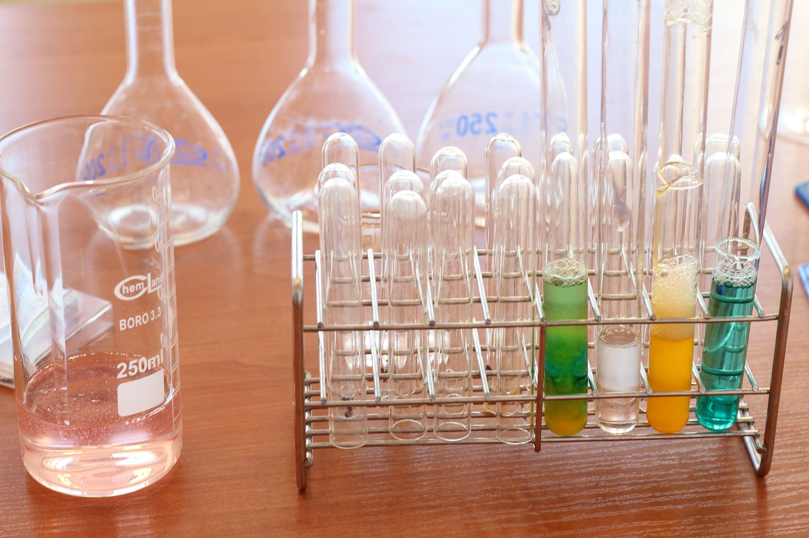

My Work






As a dedicated high school chemistry teacher with over 15 years of classroom experience, I am passionate about making science both accessible and inspiring for students of all backgrounds. My teaching philosophy centers on curiosity, rigor, and hands-on experimentation — helping students not only understand complex concepts but also see their real-world applications.